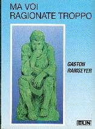

21:45 · 2 OPERE
L'occupazione interiore.
Il filo del discorso
Durante una passeggiata, Dr Divago riprende il tema della razionalità e della sua relazione con l’autonomia personale. Contesta l’immagine di una ragione fredda e separata dalla vita, estendendo la critica anche ad alcune espressioni del discorso religioso. Il ricordo di Ma voi ragionate troppo introduce il rischio, a suo avviso, di rinunciare agli strumenti del giudizio. La domanda su come si conosce ciò che si afferma diventa il filo conduttore della riflessione: provenienza delle idee, confronto fra fonti e capacità di argomentare sono presentati come condizioni per non subire contenuti estranei. Il relatore applica questa prospettiva alle proteste sul conflitto israelo-palestinese, formulando giudizi politici fortemente polemici, e racconta una contestazione a un proprio articolo sugli animali. L’esempio di un paniere di vimini distingue il desiderio di fare qualcosa dalla competenza necessaria a realizzarla. La critica dei linguaggi mediatici e dell’appello all’autorità scientifica confluisce poi nella figura dell’homo novus, collegata al suo libro L’ultima dea d’Occidente. Nel finale la società è descritta come un patto di protezione, che il relatore considera compromesso dalla perdita di riferimenti e dall’adesione al potere. L’occupazione interiore del titolo è quindi una metafora della dipendenza del giudizio. Le interpretazioni del conflitto e le espressioni patologizzanti rivolte a gruppi sociali restano posizioni del relatore e non costituiscono accertamenti storici, giuridici o clinici della scheda.
I libri nel discorso

Ma voi ragionate troppo
Identificazione probabile
Copertina: Uomini Nuovi · copertina dal catalogo CLC
Copertina reale di riferimento; l’edizione non è identificata come quella citata nel video.
Il titolo Ma voi ragionate troppo è pronunciato chiaramente; l’autore non è nominato. Il riscontro con Gaston Ramseyer e il suo profilo rende l’identificazione probabile.
Passaggio 5:40 ↗ · Fonti e libro ↗
Bibbia
Copertina: San Paolo, 2014 · Nuova Versione dai Testi Antichi · edizione di riferimento
Il testo biblico è richiamato come fonte della teologia occidentale, senza un singolo libro o passo determinato.
Passaggio 4:21 ↗ · Fonti e libro ↗Minutaggi ricavati da testi automatici, da riascoltare. Le identificazioni probabili sono segnalate accanto ai libri.